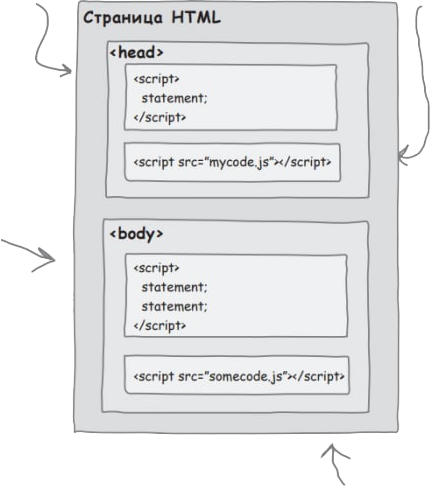

Головна > Тема 3
Взаємодія зі сторінкою
Створення сигналу. Оповіщення користувача за допомогою функції alert.
Прямий запис в документ. Функція document.write дозволяє вивести довільну розмітку HTML і контент в довільній точці сторінки.
Виведення на консоль. Для того щоб вивести повідомлення на консоль, викликається функція console.log і передається їй рядок, функція console.log - відмінний інструмент діагностики та відладки.
Безпосередня модифікація документа. Всі операціїї (звернення до розмітки веб-сторінки, зчитування та зміна її змісту, зміна структури і стилю) виконується через об'єктну модель документа (DOM).
Знайомство з console.log
var message = "Howdy" + " " + "partner";
console.log(message);Розміщення коду JS
- В елементі <head>.
- В розділі <body>. Сторінка швидше завантажуєтья і під час опрацювання скрипта користувач вже буде бачити сторінку.
- В окремому файлі. Посиланя на файл розміщуеться в елементі <head> як файл CSS.
<script src="mycode.js"> - Посилання розмістити в тілі сторінки. Маємо окремий файл JS, посилання розміщуємо в кінці тіла сторінки і код буде завантаживатися лише після завантаження тіла сторінки: 
- Створюємо файл JS та додаємо посилання.
Закріплення знань
1. document.write
A. Я негайно зупиняю те, чим займається користувач, і видаю короткий сообщеніе.чтоби рухатися далі, користувач повинен натиснути "ок"
2. console.log
Б. Я вмію вставляти невеликі фрагменти розмітки html і тексту в документ. може, я й не самі елегантний спосіб передачі інформації користувачу, але зате я працюю в усіх браузерах.
3. alert
В. З моєю допомогою ви зможете повністю керувати веб-сторінкою: отримувати дані, введені користувачем, змінювати розмітку html і стилі, оновлювати вміст сторінки.
4. Об'єктна модель документа
Г. Я існую виключно для вирішення простих завдань налагодження, і дозволяю виводити інформацію на спеціальну консоль, призначену для розробників.
Оберіть правильну відповідь:
1 - A, 2 - В, 3 - Г, 4 - Б1 - В, 2 - Г, 3 - А, 4 - Б
1 - Б, 2 - Г, 3 - А, 4 - В
1 - Г, 2 - Б, 3 - А, 4 - В
Правильна відповідь: 3) 1 - Б, 2 - Г, 3 - А, 4 - В